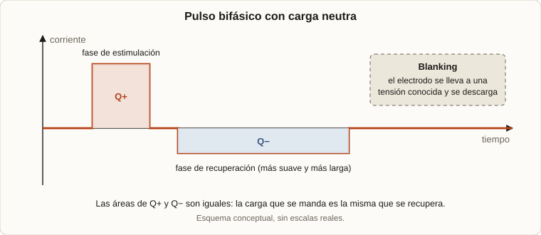

En marzo de 2026 fui a Tucumán a la EAMTA 2026 (20.ª edición, del 9 al 13 de marzo, en la Universidad Nacional de Tucumán) a hacer un curso de dispositivos implantables. Lo dio el doctor ingeniero Joel Gak, de Uruguay, que se especializó en el diseño y la fabricación de marcapasos, y por eso gran parte del curso giró en torno a ellos. Hubo además una charla de Alfredo Arnaud, que trabaja en CCC, una empresa fundada hace mucho por un cardiólogo.
Vimos los circuitos básicos y, sobre todo, las consideraciones de diseño que cambian cuando el circuito va dentro de una persona. Estas son las ideas que anoté, ordenadas.
1. Qué es un implante activo
2. El reto de la señal
3. Estimular sin dañar
4. De dónde sale la energía
5. Alta tensión: depende del contexto
6. Seguridad
7. Qué me llevé
1. Qué es un implante activo
Los dispositivos implantables son implantes que ayudan a mejorar la calidad de vida de las personas. En el curso nos centramos en los activos: los que tienen electrónica y energía propia, y van insertados debajo de la piel. El primero fue el marcapasos, y su variante más conocida es el ICD (desfibrilador implantable). Otro ejemplo, menos frecuente, es la prótesis coclear.
Un marcapasos escucha al corazón. Si encuentra una señal extraña, envía pulsos para estimularlo. Todo lo que sigue sale de esas dos tareas: sensar con mucha precisión y estimular sin hacer daño.
Estos dispositivos se resuelven con ASIC (Application Specific Integrated Circuit): un circuito integrado diseñado para esa única aplicación, con el tamaño, el consumo y el ruido que el caso necesita.
2. El reto de la señal
Pocos microvolts, poco ruido
El desafío del sensado es que las señales son de baja frecuencia y de amplitudes muy chicas, del orden de los microvolts en los casos más exigentes. Eso obliga a que toda la electrónica de entrada tenga:
- Bajo ruido.
- CMRR muy alto (rechazo de modo común), porque el cuerpo es un ambiente lleno de interferencias.
- Alta ganancia.
- Bajo consumo, porque el dispositivo tiene que funcionar durante años con una batería chica (las baterías que mencionamos andan entre 900 y 2000 mAh).
Cada cuerpo es distinto
Cada persona tiene un cuerpo diferente y una respuesta diferente. El comparador tiene que medir bien la señal, pero esa señal puede cambiar su amplitud unas 100 veces. Por eso el ajuste no puede ser fijo: se necesita un umbral dinámico o adaptable. Se mencionó el paper de Wong (2004) como la base de los sensores cardíacos.
Un procesador a medida
Para el control se usan procesadores RISC-V, que permiten armar un micro a medida. La pregunta que se planteó es de diseño puro: si estoy armando un marcapasos, ¿para qué quiero un I²C o cualquier periférico que no voy a usar? En un ASIC, cada bloque que sobra es consumo y área desperdiciados.
3. Estimular sin dañar
Electrodos
Los electrodos son la interfaz con el tejido y hay varios tipos. Dos que anoté: los de tipo esposa (cuff), que agarran al tejido como un abrazo, y los de marcapasos, que se fijan como un arpón. La estimulación va desde unos 100 µA hasta decenas de mA, con un pulso o un tren de pulsos de duraciones de varios cientos de microsegundos.
El problema: iones y electrólisis
En el medio biológico la corriente se conduce por iones, no por electrones. Si se pasa corriente continua por el tejido se produce electrólisis, y si dura en el tiempo provoca un daño irreversible. Además, al estimular un tejido se acumula carga, que genera campos en el tejido y que, si no se trabaja bien, puede dañar al paciente.
La solución: carga neutra
Para evitarlo se regula la carga que se manda: el pulso es bifásico, primero una tensión positiva y luego una negativa, de modo que el promedio de la carga sea cero. La regla práctica es la que me quedó anotada: mando un coulomb y devuelvo uno. Se mandan cargas y se las llama de vuelta rápido para balancearlas.

Aun así, un balance perfecto es difícil, así que cada tanto se hace un blanking: se lleva el electrodo a una tensión conocida para eliminar toda la carga que se haya ido acumulando. También existe el balance de carga pasivo: darle al capacitor un camino para que se descargue, de forma parecida al sistema de precarga y descarga del pack del auto de FSAE, pero acá se busca que el sistema se descargue lentamente.
4. De dónde sale la energía
Baterías
| Tipo | Características |
|---|---|
| Primarias (no recargables) | Las más seguras. Se usan de litio-yodo, de unos 2,8 V. A medida que se consume, la tensión baja y la resistencia interna sube, de decenas de miliohms a kiloohms. |
| Secundarias (recargables) | Impedancia de salida mucho menor, pero una densidad de energía mucho menor. |
Esa resistencia interna creciente es una restricción de diseño: la batería ya no puede entregar corrientes altas al final de su vida, así que el circuito tiene que tolerarlo.
Subir y bajar tensión
La estimulación suele necesitar más tensión de la que da la batería, así que hacen falta elevadores y reductores. Vimos dos familias:
| Familia | Cómo funciona | Cuándo conviene |
|---|---|---|
| Inductores conmutados | Almacenan energía en un inductor. | Componentes más discretos y alta frecuencia. Buena eficiencia con corrientes elevadas. |
| Capacitores conmutados (charge pump, bombas de carga) | Cargo los capacitores en paralelo y luego los pongo en serie. | Mucho más eficientes con corrientes bajas, pero solo eficientes para múltiplos de la tensión de entrada. |
En estos sistemas, la corriente de cortocircuito en la conmutación se minimiza desde el diseño de los MOS: el efecto ocurre, pero se vuelve despreciable. Por eso, a diferencia de un inverter, acá no se ajusta un dead-time.
5. Alta tensión: una definición que depende del contexto
En electrónica, "alta tensión" no significa lo mismo en todos lados. Cada área la define según lo que está en juego:
| Contexto | Qué se llama alta tensión |
|---|---|
| Instalaciones eléctricas | Se suele hablar de alta tensión a partir de unos 36 kV. |
| Electrónica de IoT y embebidos | Se le llama alta tensión a la tensión de red, 220 V. |
| Dispositivos implantables | Alta tensión son unos pocos volts. |
¿Por qué en los implantables un valor tan chico ya es "alta tensión"? Porque dentro del cuerpo unos pocos volts pueden ser mortales. Afuera, la piel seca ofrece una resistencia alta que limita la corriente. Adentro no existe esa barrera, y un electrodo apoyado sobre el corazón entrega corriente directo al tejido. En esas condiciones, corrientes muy chicas pueden desencadenar una fibrilación. Por eso las normas de equipos médicos limitan la corriente de fuga en las partes que tocan el corazón a valores del orden de decenas de microamperes. La referencia de seguridad no es la tensión de una instalación sino lo que le pasa a un tejido vivo.
Y el chip: alta tensión como tecnología
Hay una segunda acepción, la del proceso de fabricación. Por el grosor del óxido de silicio, un transistor CMOS no puede soportar alta tensión en el gate, pero sí en el drain, con técnicas de diseño. La tecnología de alta tensión (HV) se construye principalmente sobre SOI, y lo típico no pasa de unos 50 V; hay casos especiales, pero normalmente se trabaja en ese rango.
Las dos definiciones conviven. Para el proceso, 50 V es el límite de lo que el chip aguanta. Para el paciente, la alerta empieza muchísimo antes: cualquier nodo del circuito que pueda llegar a unos pocos volts sobre el tejido se trata con el cuidado de un circuito de alta tensión.
6. Seguridad
- Protecciones ESD (TVS) en todos lados, para descargas electrostáticas.
- Análisis de seguridad acotado: en vez de analizar todo el circuito, se analiza la seguridad de los transistores de salida, que son los que están conectados al paciente. Por ejemplo, con un elevador de tensión no se analiza todo el circuito sino solo el transistor de salida.
- Carga neutra y blanking, como se vio en la sección 3.
7. Qué me llevé
Vengo de la electrónica de potencia, y el curso me mostró el mismo vocabulario (conversión, eficiencia, protección, carga y descarga de capacitores, tiempo muerto) pero con otras prioridades: ahí, el consumo y la seguridad del paciente mandan sobre casi todo lo demás. Es el extremo opuesto del inverter de cientos de kilowatts, y por eso mismo cambia la forma de pensar un diseño.